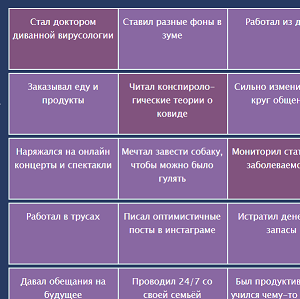
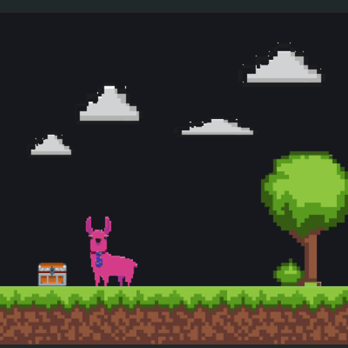
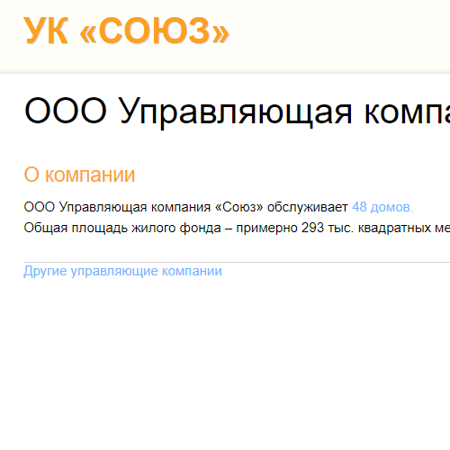
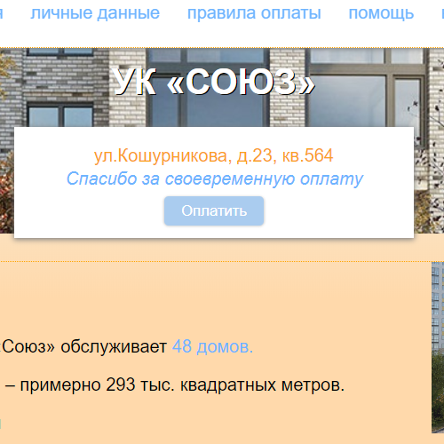
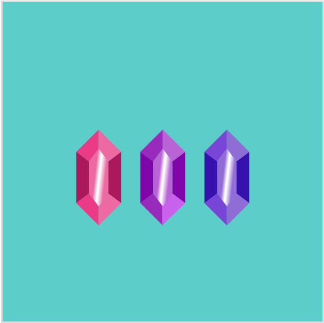

Сапожникова Саша
Very junior верстальщик
Давайте познакомимся
Пара слов о себе
Читатель, флорист, химик, путешественник, художник.
Что с вёрсткой?
Прохожу обучающие интерактивные курсы в HTML-academy с апреля 2020.
- Знаю структуру и основные теги в HTML;
- управляю базовыми свойствами и нахожу подходящий селектор через CSS;
- в Java Script знакома с переменными, циклами, условными конструкциями, обработчиками событий;
- знаю, что табличная модель построения документа устарела, флоаты и инлайн-блоки имеют некоторые неудобства и ограничения, а флексы и гриды - современные и гибкие.
Сейчас придумываю несколько сайтов, чтобы было интересное портфолио с демонстрацией моих умений.
Свои навыки я оцениваю на Junior, а именно:
- HTML среднего уровня
- CSS среднего уровня
- JS среднего уровня
А вот и мои работы
Карантинго
Узнай насколько необычно ты провёл карантинные времена 2020. Выбей наименьшее бинго!
Первый сайт, который придумала и сделала сама с нуля.
Копия лэндинга PrtBrt
Мне понравился необычный дизайн оригинального сайта (ссылка на него есть в подвале переделанного сайта).
Ломанная структура и пиксели - красота!
Сайт УК "Союз"
Повторила первый попавшийся сайт - управляющей компании.
Разные размеры шрифтов и форматирования - вызов, который мне бросил оригинальный сайт.
Улучшенный сайт УК
Улучшила сайт управляющей компании на свой вкус. Больше жизни, картинок, цвета.
Единые стандарты шрифтов - многое меняют.
SVG-raf
Не совсем сайт - просто место, где я рисую спомощью svg.
Вдохновленно вот этим сайтом. Только он рисует одним дивом, а я свг через html.